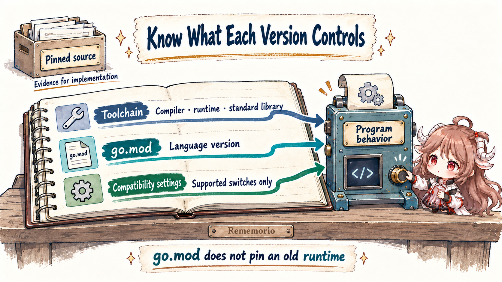
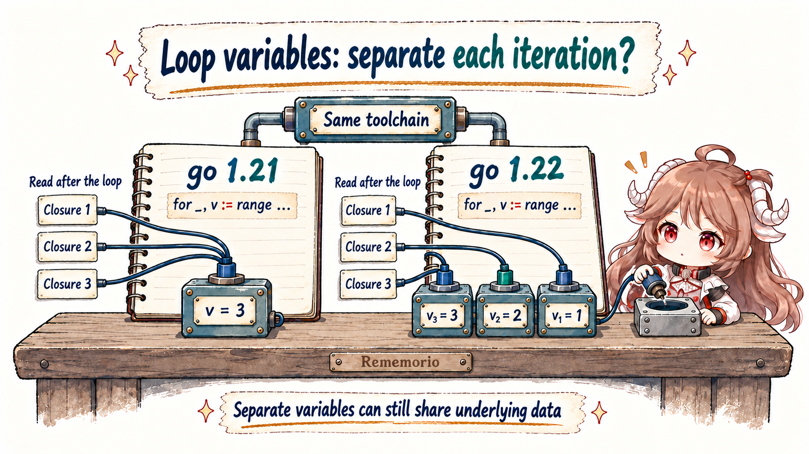
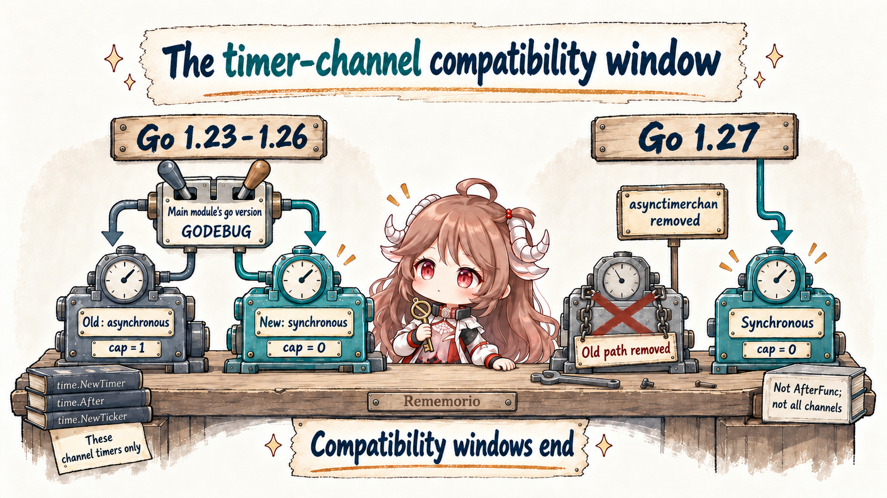

The first eight chapters followed a fetchd request through values, scheduling, synchronization, types, cancellation, memory, and networking. They examined a fixed snapshot of Go's development branch in the Go 1.28 development cycle. Calling all of that “Go 1.27” would be misleading. This chapter uses release notes to establish when a change shipped, specifications to establish what programs may rely on, and fixed Go 1.27.1 source for details of the current stable implementation. As of September 20, 2026, the latest official stable release is Go 1.27.1.
1. One compiler, three closures, different results
Suppose a request contains three jobs. First we save functions that will read each job number later, then call those functions after the loop. There are no goroutines here: the example separates variable semantics from scheduling.
var reads []func() int
for _, v := range []int{1, 2, 3} {
reads = append(reads, func() int { return v })
}
for _, read := range reads {
fmt.Println(read())
}Under the old language semantics, the loop repeatedly assigns to the same v. All three closures retain that variable, whose final value is 3. Go 1.22 gives each iteration its own declared variable, so the closures read 1, 2, and 3. What changed is when a variable is created; the compiler is not guessing the programmer's intent when a function is called.
The less obvious part is that a module declaring go 1.21 can retain the old language semantics even when built by Go 1.27.1. The repository's versionlab experiment uses one toolchain to build two separate small modules, declaring go 1.21 and go 1.22. The comparison below isolates the module language version, without depending on how an old compiler happened to schedule goroutines.
Closures over v declared by the loop:
go 1.21 → [3 3 3]
go 1.22 → [1 2 3]
v declared outside and assigned with =: both still produce [3 3 3]
Iteration values containing a shared slice: both can modify the same arrayThat is why “Go 1.22 fixed for-range, so closure problems are gone” is too broad. The release improved a frequently troublesome default. It preserved explicit variable sharing and did not change the rules for copying values or sharing memory. To know which rules a program uses, we first need to separate the meanings of “version.”
2. Which version controls which part of an upgrade?
A build has at least three distinct controls. The toolchain supplies the actual compiler, linker, runtime, and standard library. The module language version tells the compiler which language rules to apply to that module. Compatibility defaults decide whether selected library or runtime behaviors temporarily retain an older form. These controls interact, but they are not a single switch.

module example.com/version-demo
go 1.21.0
toolchain go1.27.1This hypothetical go.mod, used to explain version selection, declares Go 1.21.0 as the module's minimum requirement and suggests Go 1.27.1 when working with it as the main module. Selecting that toolchain does not automatically turn the source into Go 1.27 language. Dependencies retain their own go lines too: raising the main module to 1.22 does not rewrite every dependency's loops.
Since Go 1.21, the go line is a strict minimum requirement. Whether toolchain selection may locate or download another version also depends on GOTOOLCHAIN. The toolchain documentation describes a file-level exception: a //go:build go1.N constraint implying a minimum version of at least Go 1.21 can adjust that file's language version. When investigating semantics, inspect the module and file actually being built, not just the last go version printed in a terminal.
| What you change | Main effect | What does not follow |
|---|---|---|
| Actual build toolchain | Compiler, runtime, library implementation, and available capabilities | Every module automatically adopts the latest language rules |
A module's go line | Minimum toolchain requirement and module language version; the main module also affects compatibility defaults | Dependency source semantics all advance together |
GODEBUG / godebug | Specific documented compatibility behaviors | Any older implementation can be restored indefinitely |
GOEXPERIMENT | Build-time selection of experiments or implementation fallbacks that still exist | An experimental API has a long-term stability guarantee |
The GODEBUG compatibility mechanism provides migration time for specific behavior changes. Defaults are generally influenced by the workspace or main module version, and explicit environment settings can override them. Each setting has its own lifetime, however. Keeping an older go line cannot turn a newer toolchain back into an older runtime. The removal of the old timer mode in 1.27 is a concrete example.
3. Go 1.22 changed iteration variables, not every shared relationship
3.1 := declares variables; = assigns existing ones
The language specification draws a precise line. Iteration variables declared by a range clause with := are new for each iteration. If the variables already exist, range assigns to them. This form still shares v in Go 1.22 and later:
var v int
var reads []func() int
for _, v = range []int{1, 2, 3} {
reads = append(reads, func() int { return v })
}
// Calling reads after the loop still produces 3, 3, 3.This is deliberate. The code explicitly chooses an outer variable, which may also be needed after the loop. Fixing closures cannot silently remove that sharing. The compiler's loop-semantics selection uses the file language version to help decide whether iteration variables are distinct; the transformation also distinguishes loops that declare variables. Understanding both conditions is more reliable than unconditionally keeping or removing every v := v.

3.2 &v points to a copy; use an index to modify the element
type Job struct{ Attempts int }
jobs := []Job{{Attempts: 1}, {Attempts: 2}}
var copies []*Job
for _, v := range jobs {
copies = append(copies, &v)
}
copies[0].Attempts = 99
fmt.Println(jobs[0].Attempts) // Still 1.
for i := range jobs {
jobs[i].Attempts++ // Modifies the original element.
}With the new semantics, the two saved pointers refer to different iteration variables. Those variables still received copies of the elements. The change did not turn &v into &jobs[i]. Conversely, if a Job contains a slice, map, or pointer field, copying the struct does not recursively copy the referenced data. Two distinct variables can still access the same object. The conclusions of the value-semantics chapter remain intact.
shared := []int{0}
items := [][]int{shared, shared}
for _, item := range items {
item[0]++ // Distinct item variables still share the backing array.
}
fmt.Println(shared[0]) // 2An upgrade may let you remove copies introduced only to isolate iteration variables. It does not justify removing a lock protecting a shared array or assuming all concurrent closures are now safe. Keeping variable addresses can also change escape and allocation behavior. Check correctness and allocation cost separately.
3.3 Three-clause for loops changed too
The change is not limited to range. Variables declared by the initializer in for i := 0; i < n; i++ are also distinct across iterations. The first iteration uses the variable created by the initializer. Before the post statement of each subsequent iteration, a new variable is created and initialized from the previous iteration's value at that moment. Closures can retain their iteration's variable while changes to i in the loop body still affect later iterations.
var reads []func() int
for i := 0; i < 3; i++ {
reads = append(reads, func() int { return i })
}
// Called after the loop: old semantics give 3, 3, 3; new ones give 0, 1, 2.During migration, focus on loops that retain addresses or closures, and the less common code that deliberately communicates across iterations through one variable. Ordinary loops passing values directly to functions usually need no change. The official migration discussion explains the module-level choice: old modules retain their meaning, allowing maintainers to adopt the new semantics gradually instead of changing an entire dependency tree by replacing its compiler.
4. Put version changes back into the request path
Loop variables are a language-semantics change. Many other improvements are APIs you can explicitly adopt or implementation replacements that require no call-site change. The table keeps only changes useful for understanding this series and planning an upgrade. Each version marks a formal introduction or default enablement, not the absence of earlier experiments or the complete contents of that release.
| Version | Relevant change | What to check in a service |
|---|---|---|
| 1.18 | Generic functions, generic types, and type-set constraints | Express reuse through type parameters; benchmark real instantiations rather than assuming they beat interfaces |
| 1.19 | GOMEMLIMIT and debug.SetMemoryLimit | Budget Go-managed memory while leaving room for external memory and bursts |
| 1.20 | context.WithCancelCause / Cause | Record why work was canceled, and still wait for the work to finish |
| 1.21 | Toolchain selection; slices, maps, log/slog; WithoutCancel, AfterFunc | Make build versions explicit; retain responsibility for shared data and task cleanup when adopting APIs |
| 1.22 | Distinct loop-declared variables, integer range; ServeMux methods and wildcard routes | Check module language versions and regress routes with braces, escaped paths, or conflicting patterns |
| 1.23 | Range over iterator functions; new Timer/Ticker implementation | Stop iteration when yield returns false; find dependencies on old timer buffering and timing |
| 1.24 | Generic type aliases; builtin maps use Swiss Tables | Use aliases to migrate type APIs; map iteration remains unordered; concurrent access involving writes still needs synchronization |
| 1.25 | WaitGroup.Go, testing/synctest, reflect.TypeAssert; container-aware GOMAXPROCS | Adopt APIs explicitly; check container quotas, language versions, and manual parallelism settings |
| 1.26 | Green Tea GC enabled by default; new(expr) | Remeasure GC CPU and tail latency; creating a pointer does not necessarily allocate on the heap |
| 1.27 | Methods with their own type parameters; old timer mode removed; bounded HTTP/1 draining; size-specialized allocation enabled by default | Remove obsolete compatibility assumptions; measure reuse and allocation performance without treating optimizations as contracts |
Several adjacent releases are easy to confuse. Range over functions was experimental in 1.22 and became official in 1.23. Generic type aliases were a restricted experiment in 1.23 and fully supported in 1.24. synctest was experimental in 1.24 and generally available in 1.25 with API changes. Green Tea was experimental in 1.25 and enabled by default in 1.26. reflect.TypeAssert was added in 1.25; encountering it in 1.26 source does not make it a 1.26 feature.
Generic methods in Go 1.27 also have a precise limit: a method on a concrete type may declare its own type parameters, but interface methods may not declare type parameters, and generic methods cannot implement interface methods. The feature places generic operations more naturally in a type's namespace. It does not introduce a separate runtime generic-dispatch mechanism for interfaces.
5. Timers show how a compatibility window opens and closes
Consider a worker reusing a time.Timer while waiting for the next batch. In the old implementation, a timer channel had one buffered slot. A timeout value might already be queued, and a subsequent Reset could not simply erase every stale observation. Coordinating Stop, draining, and Reset required accounting for concurrent receivers. Blindly copying “receive once whenever Stop returns false” could already leave a program blocked.
Go 1.23 changed the model. Channel-based timers and tickers behave synchronously: after Stop or Reset returns, receives do not deliver stale values arranged before that call. Timers and tickers no longer referenced by the program can also be garbage-collected. These changes affect timer implementation and guarantees. The application still decides when its business operation stops waiting and when other resources are released.

| Actual toolchain | What selects timer-channel behavior | Upgrade check |
|---|---|---|
| 1.22 and earlier | Old buffered implementation | Check coordination of Stop/Reset, draining, and concurrent receivers |
| 1.23–1.26 | Default follows the main module's go version; asynctimerchan=0/1 explicitly selects new/old behavior | Run both modes to find dependencies on buffering and scheduling delays |
| 1.27 onward | Old mode removed; timer channels are always synchronous | Neither an old go line nor an old environment value restores the old mode |
During the compatibility window, a main module declaring go 1.23 or later selects the new default, while an older main module retains the old one. In Go 1.27, asynctimerchan was removed permanently. Specifying an obsolete value through a godebug entry in go.mod or a //go:debug directive now causes a build error. Leaving the old value in the environment cannot restore the implementation either. Compatibility settings should come with a plan to stop using them.
5.1 What should a test wait for?
When an already-readable channel and a very short timer enter one select, the old timer implementation's additional delay often let the first channel win. The new implementation makes it more likely that both are ready, allowing select to choose either. The official timer migration guide identifies this as a test assumption to correct. “It usually happened first” is not a priority guarantee. Nor should len(t.C) decide whether the next receive is safe.
testing/synctest lets a group of test goroutines use a virtual clock inside an isolated bubble. Time advances when the goroutines are blocked in ways that cannot be resolved by outside events. Every goroutine in the bubble must be durably blocked before virtual time can advance. synctest.Wait waits for the other goroutines to reach that state; returning from Wait and advancing the clock are not the same action. It is useful for timeout and cancellation tests, but real network I/O, external processes, and arbitrary mutex waits do not automatically become controlled time. It does not explore every scheduling order either. Continue to prove states with synchronization such as channels, and run race checks.
6. Which reasoning survives a faster implementation?
6.1 Container parallelism and memory budgets answer different questions
Go 1.25 made the default GOMAXPROCS on Linux consider cgroup CPU bandwidth limits and introduced periodic updates. It considers a CPU limit, not a Kubernetes CPU request. The current documentation also states that the compatibility defaults preserve old behavior for a main module language version of 1.24 or earlier. Setting a manual value through the environment or runtime.GOMAXPROCS disables automatic updates.
Before upgrading, check whether the service already sets a manual value or uses a third-party automatic configuration library. Then observe effective parallelism and throttling in a real container. Host CPU count alone does not explain effective parallelism, and a quota is not a simple hard limit on threads. The current implementation also considers upward rounding, CPU affinity, and a usual minimum of 2. Evaluate these details with the actual workload.
GOMEMLIMIT addresses a different pressure. Since 1.19 it has supplied a soft budget for memory managed by the Go runtime, influencing GC behavior. It is not a process RSS limit and does not include all C allocations or external mappings. Setting it equal to the container's memory limit does not guarantee protection from OOM; setting it below the long-lived data can instead consume CPU in repeated collection. Leave room for non-Go usage and bursts. The memory and GC chapter explains the underlying mechanism.
6.2 Swiss maps, Green Tea, and allocation routines change cost, not ownership
Swiss maps in 1.24 improved the implementation of operations such as lookup. Green Tea, enabled by default in 1.26, improved locality in GC marking and scanning. Size-specialized allocation routines in 1.27 reduced some small-object allocation costs. These are reasons to remeasure throughput, GC CPU, and tail latency. They did not make map iteration ordered, make concurrent map writes safe, or remove pointer sharing, escape, and GC pauses.
Likewise, new(expr) is a concise way to create and initialize a variable; escape analysis and related decisions still determine whether it needs heap allocation. reflect.TypeAssert can avoid some unnecessary intermediate allocations, but it does not guarantee zero allocations on every reflection path. A release-note benchmark result is a measurement, not a promise of the same percentage improvement in your service. Follow the experiments in the interfaces, generics, and reflection chapter, using the same data shapes and call paths for comparison.
6.3 After closing an HTTP/1 body, still prove the connection returned to the pool
Go 1.27 added conservative, bounded draining after an early Close of an HTTP/1 response body, giving connection reuse another chance. In the stable implementation, the attempt has a 256 KiB and 50ms budget. Its entry condition also examines the response's declared ContentLength, rather than merely the remaining bytes. These numbers and conditions are implementation details.
The application must still close response bodies and should read to real EOF when that is reasonable. An early Close returning means the caller has relinquished the body; it does not prove that draining succeeded or the connection is already idle. Distinguish the pooling event from the method return before testing subsequent reuse. The stable release tries draining when body EOF has not been observed and ContentLength is within the limit. The preceding chapter’s development snapshot additionally requires a live connection and enabled keep-alives before attempting the drain. This demonstrates why source references need a fixed version. The transferable lesson from the network-diagnostics chapter remains: record actual request phases with httptrace, then explain changes in reuse.
7. Separate an upgrade into three independently verifiable changes
7.1 Change the toolchain first, and record the actual build conditions
Keep business changes, dependency versions, and module language versions fixed initially. Build, test, and replay representative workloads with the target supported toolchain. Record the actual Go version, go.mod, workspace, GOTOOLCHAIN, GODEBUG, GOEXPERIMENT, and container CPU/memory configuration. This separates implementation changes from application changes. Retaining an older language version only reduces variables; it does not preserve every compatibility behavior forever. If a new dependency requires a higher minimum Go version, the main module’s go line must rise accordingly. These steps isolate changes when possible; not every upgrade allows them to be separated completely.
7.2 Raise the language version, then run experiments that distinguish the semantics
Next adjust the go line. Check loops retaining closures and addresses, version-constrained files, ServeMux routes, and tests relying on compatibility defaults. Start with this chapter's complete comparison experiment:
cd go-runtime/examples/versionlab
go run .The experiment demonstrates how module versions change loop meaning; it does not claim to simulate every historical runtime. Testing the 1.23–1.26 timer compatibility paths requires a toolchain that still provides both modes. Setting an old environment value on 1.27 is not a test of the old mode. Similarly, validate container scheduling with the relevant Linux quotas rather than substituting a desktop run.
7.3 Adopt new APIs last, with explicit performance acceptance criteria
Once the underlying upgrade is stable, adopt WaitGroup.Go, TypeAssert, iterators, or generic methods where they help. Preserve the responsibilities of the original code in each replacement. WaitGroup.Go does not propagate errors or cancel work, and its callback must not panic. WithoutCancel does not manage the lifetime of a newly independent task. The stop function returned by AfterFunc does not wait for an already-started callback to finish.
| Change to accept | Minimum evidence |
|---|---|
| Correct language semantics | Closure, address, and shared-object counterexamples; the relevant module and file versions |
| Correct cancellation, timeout, and completion | Synchronized tests proving event order, timeout-boundary tests, and race runs |
| Acceptable resource behavior | Effective parallelism, peak memory, allocations, and GC CPU under the same workload |
| Improved user-visible behavior | Throughput, P99, timeout rate, connection reuse, and rollback conditions under comparable traffic |
The durable result is an ability to explain a change: this behavior is guaranteed by language rules, that one is temporarily preserved by a compatibility setting, and another is an optimization in the current implementation. Keeping those distinctions clear lets you adopt a newer toolchain's improvements while knowing which experiment can show that your service has adapted.
Sources and further reading
- Go release history and support policy; toolchain selection; GODEBUG compatibility
- For statement specification; Go 1.22 loop-variable migration
- Loop language-version selection in the stable compiler
- Go 1.23 timer migration; Compatibility settings removed in Go 1.27
- GOMAXPROCS contract and implementation notes; GC guide; Swiss map implementation
- testing/synctest; WaitGroup.Go; reflect.TypeAssert
- Go 1.27 release notes; Runnable version-semantics comparison